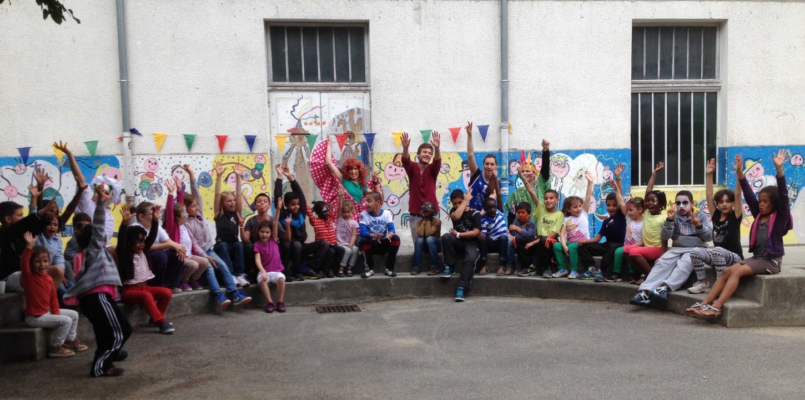

L'accueil de loisirs
Le centre de loisirs accueille les enfants de 3 à 11 ans (CM2) les mercredis et vacances scolaires. A travers ses activités culturelles et sportives, l’équipe pédagogique a pour objectif :
- D'assurer la sécurité physique, morale et affective de l’enfant
- De respecter le rythme et les besoins de l’enfant
- De prendre en compte les intérêts et les choix de l’enfant
- D'orienter l’enfant vers une démarche d’autonomie
- De permettre à chaque enfant de trouver sa place au sein du groupe (socialisation)
- D'éveiller l’enfant à de nouvelles activités, de nouvelles pratiques
Les enfants sont accueillis sur 2 sites selon les tranches d’âges suivantes :
- Les Pitchouns (3-5 ans) – Ecole J. Ferry
- Les Explorateurs (6-8 ans) – MDH Abbaye
- Les Aventuriers (9-11 ans) – MDH Abbaye
Les enfants ne sont pas des vases que l’on remplit mais des feux qu'on allume (D'après Michel de Montaigne)
Les mercredis
Accueil en demi-journée avec ou sans repas.
Pour un accueil avec repas :
Un pédibus (sur inscription) est organisé pour les enfants des écoles J. Ferry, Grand Châtelet et Clémenceau. Pour les enfants d’autres écoles ou non-inscrits sur le pédibus, la prise en charge s’effectue à 12h directement à la cantine de l’école J. Ferry.
Pour un accueil sans repas :
Accueil de 13h à 13h30 à l’école J. Ferry – entrée par le portail rue Claude Genin - pour les Pitchouns et à la MDH Abbaye pour les Explorateurs et les Aventuriers.
Les inscriptions sont possibles au semestre (de septembre à janvier et de février à juin)
Programme des mercredis
Les vacances scolaires

Accueil le matin de 8h à 9h30 et le soir de 17h à 18h
Accueil en journée ou demi-journée, avec ou sans repas (sauf les mercredis)
Pour un enfant inscrit le matin sans repas :
Accueil de 11h à 11h30 à l’école J. Ferry – entrée par le portail rue Claude Genin - pour les Pitchouns et à la MDH Abbaye pour les Explorateurs et les Aventuriers.
Pour un enfant inscrit l'après-midi seulement :
Accueil de 13h à 13h30 à l’école J. Ferry – entrée par le portail rue Claude Genin - pour les Pitchouns et à la MDH Abbaye pour les Explorateurs et les Aventuriers.
Chaque mercredi une sortie à la journée est proposée. Les familles doivent fournir le pique-nique.
Les inscriptions démarrent 1 mois avant le début des vacances et le programme est disponible 3 semaines avant.
Programme des vacances